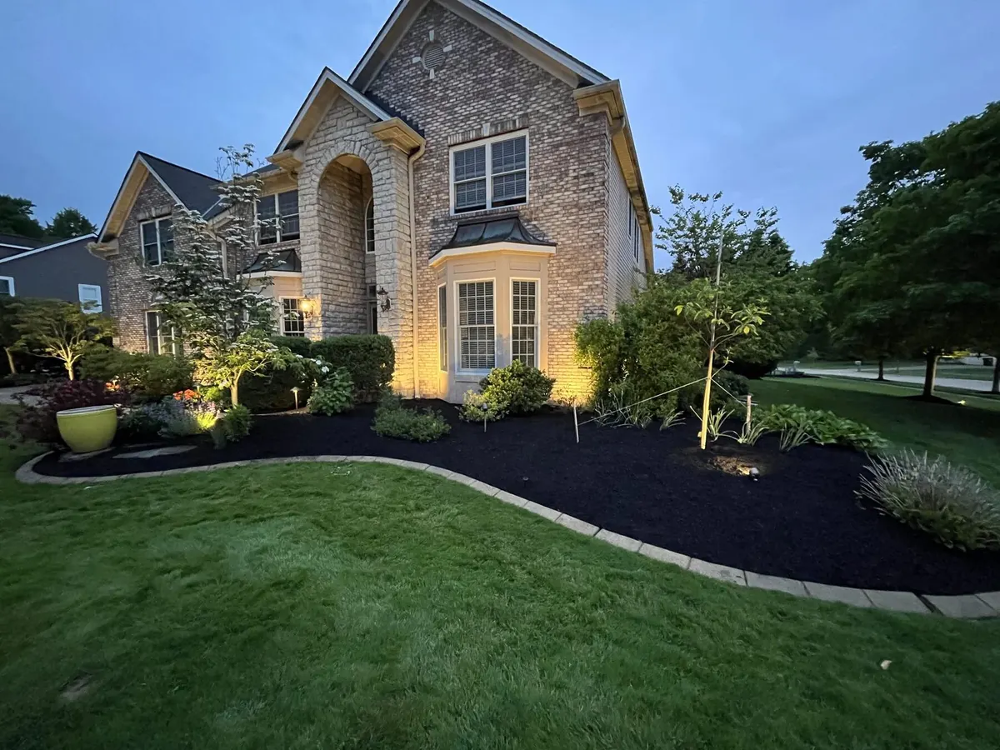

Property Maintenance
Weekly mowing, edging, and bed care across Mantua Village and Township.
Learn more →Mantua properties run from village lots on Main Street to working acreage out past the river. Eagle Scapes brings commercial equipment and a local crew to all of them.

Mantua is a fifteen-minute run from our Aurora home base, which puts the whole village and township squarely on our weekly route — not on the edge of somebody else's service map.
The ground here is different from the rest of our coverage area, and it changes how the work gets done. Mantua sits on the Upper Cuyahoga, and the low, dark muck soil that made this town the Potato Capital of Ohio also holds water long after a storm. Cut a saturated yard on the wrong day and you leave ruts that take a season to heal. We time our Mantua visits around that.
Weekly mowing, edging, and bed care across Mantua Village and Township.
Learn more →We run the village core around Main Street and High Street, the residential streets off Prospect and Sycamore, and the rural stretches along SR 44, SR 82, Peck Road, and Infirmary Road. Township properties near Camp Asbury and the parcels backing up to the Cuyahoga are on the route too. If you sit between Mantua and Hiram, or out toward Shalersville, you are still in range — give us a call and we will confirm.
Mantua is 44255, covering both the village and Mantua Township in Portage County. Being in Portage rather than Geauga matters more than people expect: snow totals here typically run lighter than Bainbridge or Auburn, but the open farmland means drifting is worse.
Drainage is the number one issue we get called about here. The river bottomland and muck ground around Mantua stay soft well into spring, and yards sitting in a low spot can hold standing water for days. Swales, French drains, and regrading beds so water moves away from the foundation are regular jobs on this route — not specialty work.
Lot size is the other factor. Many Mantua properties run an acre or more with long gravel driveways, open field edges that need trimming, and mature trees dropping serious volume every October. A residential rider takes half a day on ground like that. Our crews run 60-inch commercial Scags, so an acre is roughly forty minutes and the price reflects real time, not a guess from the road.
Deer pressure is heavy out here, especially on properties bordering farm fields or the river corridor. We plan plant lists around it rather than replacing chewed-up hostas every spring.
A lot of crews quote Mantua like it is a bolt-on to their Streetsboro or Aurora route, then show up whenever they have a gap. We are fifteen minutes out with a full crew, so Mantua gets a real slot on the schedule and a consistent day of the week. Same phone number, same crew, and a walkthrough quote instead of a satellite estimate.
Mantua is USDA Zone 6a. Crabgrass pre-emergent goes down between April 5 and April 15, right alongside our Aurora route. The muck ground warms slower than Geauga County clay, so first mow here often lands a few days behind our other towns — and the fall cleanup window runs later, since the tree cover along the river drops well into November. On the snow side, sign contracts by early October; rural driveways take longer per push and the route fills first-come. Heading south for the winter? Our home watch service keeps eyes on the property while you are gone.
Yes - we cover both Mantua Village and the surrounding Mantua Township, including properties along SR 44, SR 82, Peck Road, and the parcels near the Cuyahoga River. Larger rural lots are routine for us; we run 60-inch commercial mowers, so acreage doesn't slow us down or spike your price.
Most Mantua properties fall between $55 and $110 per visit, driven by lot size, slope, and how much trimming the property needs. Rural parcels over an acre usually land in the upper half of that range. We quote from an in-person walkthrough, not a satellite guess, so the number you get is the number you pay.
That's a big part of our Mantua work. The Upper Cuyahoga corridor and the old muck ground around town hold water long after a storm, and standard mowing schedules don't work on saturated turf. We adjust cut timing after heavy rain, run lighter equipment where needed, and handle drainage fixes like swales and bed regrading so the water has somewhere to go.
Sign by early October. Mantua sits in Portage County, so you'll typically see less lake-effect than Geauga County towns like Bainbridge - but SR 44 and the rural roads still drift badly across open farmland. Seasonal contracts fill first-come, and rural driveways take longer per push, so early sign-ups get priority in the route.
Get a free, custom quote for your Mantua property within 24 hours.